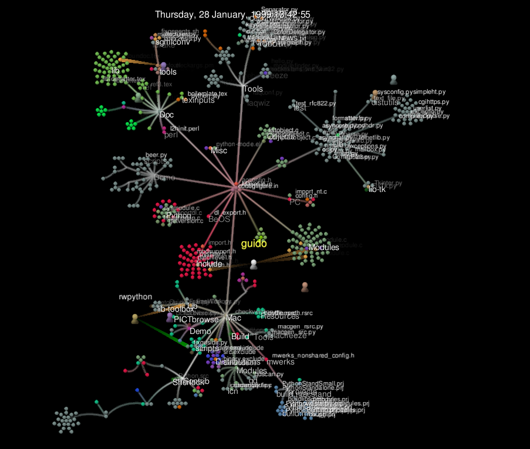
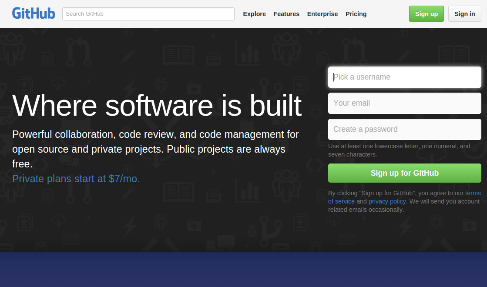
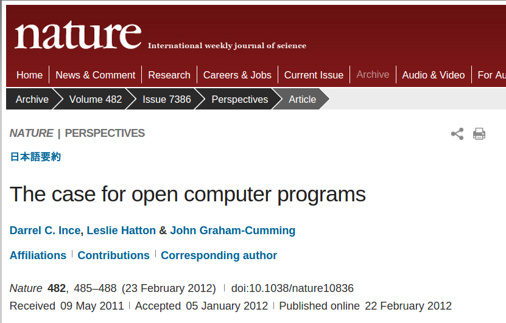
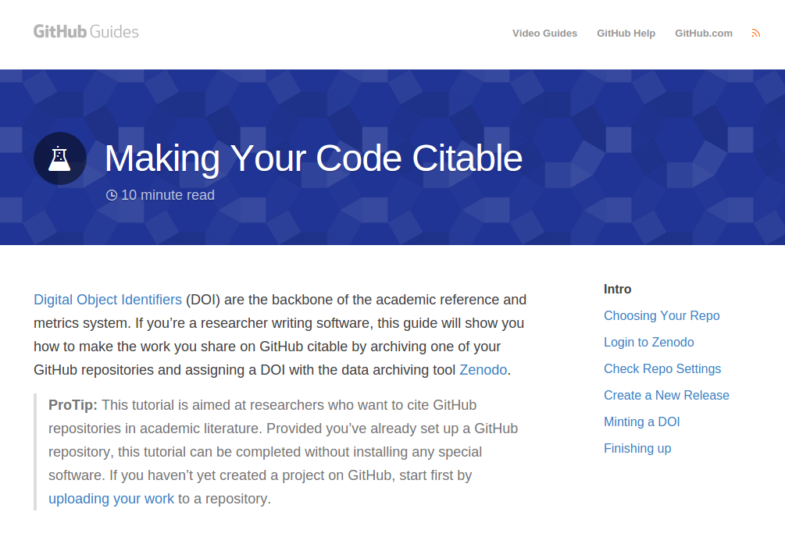
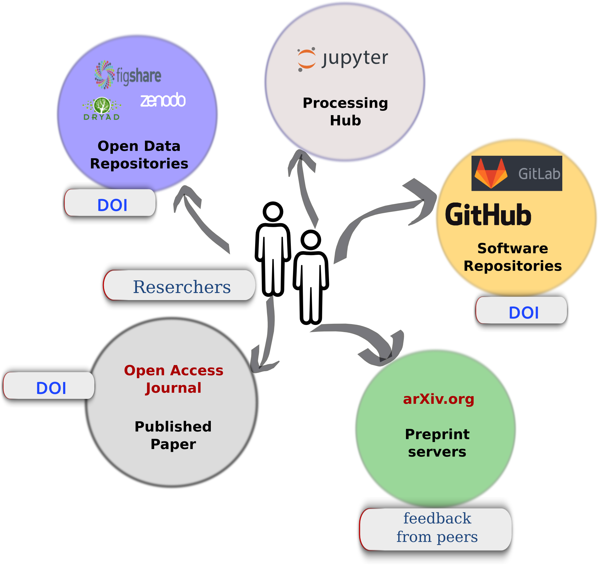

<style>
- .blue {
     color: #1b91ff;
 }
 .red {
     color: #ff2c2d;
 }
 .green {
     color: #17ff2e;
 }

</style>

<section>
    <h3>Collaborative Open Source Development</h3>
    <p><a src="">Stefano Menegon</a></p>
    <p>&nbsp; </p>
    <h4>CNR - Insitute of Marine Sciences</h4>
    <br>
    <p>Venice, 20 November 2015</p>
</section>

<!-- *********************************************************************** -->
<section>
    <h1>Open Software</h1>
    
    <h1>Open Science</h1>
    <aside  class="notes">
        In this presentation I try to explain  a bidirectional relationship between the open software and the Open science.
        The first  first direction goes from the th Open Software to the Open Science.
        The idea is that the open software is an important inspiration of to actual vision of open science
        both in terms of collaborative development and in
        terms of thecnological infrastructures.
        The keywords are collaborative developments and (a teechnological idea) of Version Control System.
        And this is maily the past and the present.

        The opposite direction maybe not so well investigated, from Open Science to Open Software.
        The growth of Open Science will provide an important
        contribute to the open source software use and developmente.
        The keywords are computational science, reproducibility
    </aside>
</section>

<section>
    <h2>Open software as collaborative development model</h2>
    
    
    <small><a href="https://www.youtube.com/watch?v=Qfq2ughG7cw">An example: evolution of QGIS </a></small>
    <aside  class="notes">
        Generally, behind an open source software there is an open communities
        of developers, users, someone that write documentations
        and so on.
        To understand better, let see a video about the evolution of an open source project like QGis.
        At the beginning there was only a developer
        If we go on a bit  ...  the project has grown.
        there are many developers (about 10) that maybe work at the same moment
        at the project and maybe at the same files.
        let's move on yet  ... a bigger project with more developers

        And now beginning to be a real community. They need to choose a leader and a committee to take decisions and so on.

        We can call this a self-structuring process of the software community.

        And there is a tool that allows the collaborative development of the software and allow to create this videos after more thant 10 years.

    </aside>
</section>

<section>
    <h3>Version Control System</h3>
    <p>The long history: cvs, svn, mercurial, <span class="red">git</span></p>
        
        
    <ul>
        <li>records changes over time</li>
        <li>you can recall specific versions later</li>
        <li>lets multiple users simultaneously edit their own copies</li>
        <li>strategies: merging and conflict resolutions</li>
    </ul>
    <aside class="notes">

        Nothing that is committed to version control is ever
        lost. Since all old versions of files are saved, it’s always
        possible to go back in time to see exactly who wrote what on a
        particular day, or what version of a program was used to
        generate a particular set of results.

        As we have this record of who made what changes when, we know
        who to ask if we have questions later on, and, if needed it,
        revert to a previous version, much like the “undo” feature in
        an editor.

        When several people collaborate in the same project, it’s
        possible to accidentally overlook or overwrite someone’s
        changes: the version control system automatically notifies
        users whenever there’s a conflict between one person’s work
        and another’s.


    </aside>
</section>

<section>
    
    
    
    
    
    <aside class="notes">
        And Version control systems are essential for any form of
        distributed, collaborative development.
    </aside>
</section>

<section>
    
    <small><a href="https://github.com">GitHub.com </a></small>
    <p>2008: Git + Social tools = GitHub.</p>
    <p>
        Code, documentations, discussions, reviews. </p>
    <p>Transparency, visible feedback</p>
    <aside  class="notes">
        And in 2008 there was a paradim shift in the world of version control system
        was lunched GitHub a successful social site, a code - hosting
        repository based on the Git version control system.  GitHub is
        an iconic example of a knowledge - based workspace.  This site
        integrates a number of social features that make unique
        information about users and their activities visible wi thin
        and across open source software projects.

    </aside>
</section>

<section>
    <h3>The lessons of the open source</h3>
    
    <ul>
        <li>Version Control System and collaborative web platforms</li>
        <li>Self-structuring communities</li>
        <li>Cooperation between volunteers and professionals</li>
        <li>Licenses: what exactly "Open" means</li>
    </ul>
    <aside  class="notes">
        And Version control systems are essential for any form of
        distributed, collaborative development.
        And this is the first and very important contribute of the Open Sotware to actual

        This is the end of the first direction of this presentation
    </aside>
</section>


<section>
    <h2>Computational science</h2>
    
    <aside  class="notes">

        Computational science is a rapidly growing multidisciplinary
        field that uses advanced computing capabilities to understand
        and solve complex problems. Computational science fuses three
        distinct elements:[1]

        So the computational science is a mix of Algorithms, modelling, simulations,
        statists.

        Computer and information science that develops and optimizes
        the advanced system hardware, software, networking, and data
        management components needed to solve computationally
        demanding problems

        The computing infrastructure that supports both the science
        and engineering problem solving and the developmental computer
        and information science
    </aside>
</section>

<section>
    
    <p>
        Our view is that we have reached the point that, with some
        exceptions, <span class="red">anything less than release of actual source code
        is an indefensible approach for any scientific results that
        depend on computation</span>, because not releasing such code raises
        needless, and needlessly confusing, roadblocks to reproducibility.
    </p>
</section>


<section>
    
    <small>Roger D. Peng, Reproducible Research in Computational Science, Science, 2011</small>
    <small><a href="http://www.sciencemag.org/content/334/6060/1226">http://www.sciencemag.org/content/334/6060/1226</a></small>
    <aside class="notes">
        One aim of the reproducibility standard is to fill the gap in the scientific evidence-generating process between full replication of a study and no replication. Between these two extreme end points, there is a spectrum of possibilities, and a study may be more or less reproducible than another depending on what data and code are made available

         Software is science, in the sense that when developed in the
         course of computational science research, it can't be classified as "infrastructure" or "support". If a telescope is infrastructure for astronomy, then its equivalent or computational mathematics is a supercomputer. On the other hand, code produced to prove a theorem, simulate an explosion or study an image denoising algorithm is the subject-matter of the science being investigated.

        We need this work to be recognized and time and effort invested in it must be rewarded by scholarship standards. On the other hand, when science is based on software foundations, the computational part of the research should be subject to validation by the scientific method. This implies that every program used in the elaboration of a research paper should, at least, be usable by referees, and if possible be publicly available is source form. Open Source software is part of the equation, but it is not sufficient to answer the questions raised here.

    </aside>
</section>

<section>
    
    <aside  class="notes">
        But, in order to fill the gaps, to go toward a full replication we need a
        way to cite our softwares.

        Could be serveral solutions.
        A good one is the extension of GitHub that make your code citable:

        If you’re a researcher writing software, this guide will show
        you how to make the work you share on GitHub citable by
        archiving one of your GitHub repositories and assigning a DOI


    </aside>
</section>

<section>
    <h4>Computational Science Wheel</h4>
    
    <aside class="notes">
        For a growing number of scientists, though, the process looks like this:

        The data that the scientist collects is stored in an open access repository like figshare or Zenodo, possibly as soon as it’s collected

        The scientist creates a new repository on GitHub to hold her work.
        As she does her analysis, she pushes changes to her scripts (and possibly some output files) to that repository. She also uses the repository for her paper; that repository is then the hub for collaboration with her colleagues.
        When she’s happy with the state of her paper, she posts a version to arXiv or some other preprint server to invite feedback from peers.
        Based on that feedback, she may post several revisions before finally submitting her paper to a journal.
        The published paper includes links to her preprint and to her code and data repositories, which makes it much easier for other scientists to use her work as starting point for their own research.
        This open model accelerates discovery: the more open work is, the more widely it is cited and re-used. However, people who want to work this way need to make some decisions about what exactly “open” means and how to do it.

        The conceptual stages of your work are documented, including who did what and when. Every step is stamped with an identifier (the commit ID) that is for most intents and purposes is unique.
        You can tie documentation of rationale, ideas, and other intellectual work directly to the changes that spring from them.
        You can refer to what you used in your research to obtain your computational results in a way that is unique and recoverable.
        With a distributed version control system such as Git, the version control repository is easy to archive for perpetuity, and contains the entire history.
    </aside>
</section>

<section>
    <p>The growth of Open Science will provide an important contribute
        to the Open Source software.
    </p>
    <p>Open Science needs always more Open Source software<p>

    
    <h4>A concrete proposal</h4>
    <ul>
        <li>There are excellent IT solutions</li>
        <li>There are great experiences around the world</li>
        <li>We (OPERAS, ISMAR, CNR?) could start to collaborate with "experts":
            <ul>
                <li class="red">Software Carpentry </li>
                <li class="red">Data Carpentry </li>
            </ul>
        </li>
    </ul>

    <aside  class="notes">
        Today we have seen mainly ideas and maybe a proof of concept
        about the computatinal science whell.

        but maybe there is the basic to move on a bit

        Software Carpetry and Data Carpentry  are non-profit volunteer organizations.
        who members teach researchers basic software skills and data.

        They have a lot of open good stuff (also trainers) to deal with the entire
        process, for instance manage and analyze data, understanding
        and using the version control system.

        A idea for the future colud be to organize specific course
        here, venice? italy?

        Whit

    </aside>
</section>


<section>
    <iframe src="http://software-carpentry.org/" width="1400" height="600"></iframe>
    <small><a href="http://software-carpentry.org/">software-carpentry.org</a></small>
    <aside  class="notes">
    </aside>
</section>

<section>
    <iframe src="http://www.datacarpentry.org/" width="1400" height="600"></iframe>
    <small><a href="http://www.datacarpentry.org/">DataCarpentry.org</a></small>
    <aside  class="notes">
    </aside>
</section>

<!--section>
    <iframe src="http://coursesource.org/" width="1400" height="600"></iframe>
    <small><a href="http://coursesource.org/">CourseSource.org</a></small>
    <aside  class="notes">
    </aside>
</section-->

<section>
    <h3>Collaborative Free Open Source Development</h3>
    <span xmlns:cc="http://creativecommons.org/ns#"
          property="cc:attributionName">by S. Menegon</span>
    is licensed under a <a rel="license"
                           href="http://creativecommons.org/licenses/by/4.0/">Creative
        Commons Attribution 4.0 International
        License</a>.
    <br/>
    <a rel="license"
       href="http://creativecommons.org/licenses/by/4.0/">
        
    </a>
</section>
